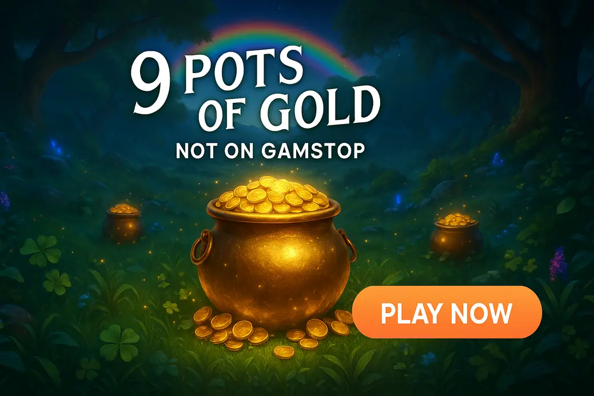

9 Pots Of Gold Not On Gamstop

Last Updated: 6 October 2026 | Verified by iGaming experts
The short version: 9 Pots of Gold not on Gamstop is for players who want a punchy Irish-themed slot with simple mechanics, proper win potential and no twenty-minute lecture before the reels start. It is bright, noisy, a bit cheeky, and honestly, that pot-collect tease is the thing that keeps people pressing spin.
For UK players, the big point is licensing. A 9 pots of gold non gamstop casino sits outside the UK self-exclusion network, so it is not UKGC-regulated. That gives more payment and bonus freedom, but it also means you need to be sharper with limits, KYC and withdrawal rules. No bollocks: read the cashier page before you deposit.
9 Pots Of Gold Slot Not On Gamstop
- Clean lobby and fast slot search
- Crypto-friendly cashier
- Trade-off: bonus terms need reading before claiming
- The search bar actually works
- Bitcoin withdrawals can be very quick after verification
- Trade-off: KYC checks can pause larger cash-outs
- Good for classic slots and modern video slots
- Simple cashier layout
- Trade-off: promo pages can feel busy on mobile
- Fast-loading games on 4G
- Solid provider range
- Trade-off: withdrawal speed depends heavily on method
- Strong mobile navigation
- Plenty of slots from recognised studios
- Trade-off: wagering terms vary by promotion
9 pots of gold slot not on gamstop searches usually come from players who already know the game and want a casino that lets them play it without GamStop restrictions. Fair enough. The game itself is not complicated: 5 reels, 20 paylines, Irish pub energy, leprechauns, coins, rainbows and a bonus round that loves making you wait for the right symbol.
9 Pots of Gold comes from Gameburger Studios under the Games Global/Microgaming family. That matters because the maths feels familiar if you have played Immortal Romance, Break Da Bank Again or other old-school Microgaming-style slots. The trade-off is clear: it lacks the wild chaos of Pragmatic Play’s Big Bass Bonanza, but it gives a cleaner, less messy reel set.
Benefits of MyStake Casino
- Slot search is genuinely useful: type “9 pots” and you are not buried under unrelated roulette tables. Small thing, big difference.
- Payments feel modern: crypto support is handy, and a Bitcoin withdrawal landing in 6 hours is realistic once the account is verified.
- Game choice is deep: MyStake carries big-name providers, though every provider has weak games too. Big Bass Bonanza is fun but brutally swingy; Book of Dead has iconic bonus potential but dry spells can be savage.
- Mobile layout is tidy: the lobby does not collapse into a tiny mess on iPhone or Android.
Drawbacks of MyStake Casino
- Not UKGC licensed: UK players do not get the same UKGC protections, so limits and self-control matter more.
- KYC can interrupt withdrawals: if you win big, expect document checks. That is normal, but still annoying.
- Bonus terms need attention: wagering, max bet limits and excluded games can turn a good offer into a damn headache.
- Crypto volatility is real: Bitcoin is fast, but coin value moving during a session is a genuine trade-off.
9 Pots Of Gold Key info
Here is the useful stuff without the marketing glitter. 9 pots of gold no gamstop play is the same slot experience at non-UK casinos, but the operator controls availability, RTP version and bonus eligibility. Always open the game info panel before wagering. It takes ten seconds and saves arguments later.
9 Pots Of Gold Slot RTP
The standard 9 Pots of Gold RTP is 96.24%, with high volatility. That number is respectable for a video slot, but do not treat it like a promise. RTP is measured across huge samples, not one Friday night after two pints and a takeaway.
In practical terms, the game can feel quiet in the base round, then suddenly wake up when wilds, scatters and pot values line up. The weakness is the same as its appeal: high volatility means your balance can bleed if you chase the feature on oversized stakes. Start lower than your ego wants. Honestly, that advice saves bankrolls.
9 Pots Of Gold Game not on Gamstop
A non gamstop 9 pots of gold casino is an offshore site that accepts UK players but does not participate in GamStop. That does not make the slot different. The reels, paytable and bonus rules remain the core game. What changes is the casino wrapper: payment methods, ID checks, bonus terms, account limits and complaint handling.
The smart move is to judge the casino before judging the bonus. Check licensing details, withdrawal limits, maximum bet rules during wagering and whether the slot is excluded from promotions. Some casinos shout about massive bonuses, then tuck a £5 max bet rule into the terms. Absolute bollocks if you miss it and void a win.
MyStake is popular because the game lobby feels fast and the filter system is not useless. DonBet, GoldenBet, VeloBet and Rolletto can also suit players looking for casinos not on gamstop with big 9 pots of gold style slot libraries, but each has the same trade-off: offshore freedom comes with more personal responsibility.
9 Pots Of Gold Game Features
9 Pots of Gold keeps things old-school, and that is part of the charm. No bonus buy shouting at you. No Megaways counter bouncing about like it drank five coffees. Just paylines, wilds, scatters and a feature that builds tension through simple visual teasing.
The closest comparison is Fishin’ Frenzy from Blueprint Gaming: simple collector idea, easy to understand, but painfully dry when the collector refuses to land. Big Bass Bonanza by Pragmatic Play adds more bonus energy and retrigger drama, yet it can rinse a balance faster. 9 Pots of Gold sits in the middle: less frantic, more pub-slot comfort, still dangerous if you chase.
How To Play 9 Pots Of Gold
Playing the game is simple, which is why it works so well on mobile. Pick your stake, hit spin, watch for scatters and keep an eye on your balance. The spin button is a menace on mobile because it sits exactly where your thumb wants to live, so set a limit before your thumb starts making financial decisions.
- Open the slot: use the casino search bar and type “9 Pots of Gold”. If the search bar returns live casino first, use the slots filter.
- Check the info panel: confirm RTP, paylines, paytable and bonus rules before staking.
- Choose a stake: £0.20 to £1 is a sensible testing range for many players. High volatility punishes oversized bets.
- Use autoplay carefully: set loss limits if the casino offers them. Autoplay without a stop-loss is asking for a kicking.
- Cash out manually: if you double a small deposit, withdraw part of it. Boring advice, lovely feeling.
Mobile UX deserves a proper mention. In portrait mode, the reels remain readable and the main controls are easy to tap, but the stake selector needs care because one extra tap can jump the bet higher than planned. Landscape mode gives a better reel view, though on smaller Android screens the browser address bar can steal space until you scroll. On 4G, 9 Pots of Gold loads cleanly because the game is not bloated with heavy bonus-buy animations. Wi-Fi is smoother for the first launch, especially inside casinos with chunky lobbies. Once loaded, spins feel responsive and the buttons do not lag like some live-casino menus.
Payment Methods
Non GamStop casinos tend to offer broader payment options than UKGC sites, especially crypto. Still, each method has a trade-off. Cards are familiar but can face banking blocks. Crypto is quick but volatile. E-wallets are tidy but not always eligible for bonuses.
- 💳 Debit Card: familiar and simple, but some UK banks decline offshore gambling transactions.
- ₿ Bitcoin: fast withdrawals after KYC; price swings are the catch.
- Ξ Ethereum: useful for crypto users, though network fees can sting during busy periods.
- 🏦 Bank Transfer: solid for larger withdrawals, slower than crypto.
- 💼 E-wallets: neat for bankroll control, yet bonus eligibility varies by casino.
Before depositing, check minimum withdrawal, daily withdrawal cap and whether the casino asks for source-of-funds documents on bigger wins. That boring cashier page is where the real review lives.
9 Pots Of Gold Bonuses
Bonuses can make 9 Pots of Gold more entertaining, but they can also trap players who do not read terms. A 200% bonus sounds tasty until you notice 40x wagering, a £5 max bet and game contribution rules. The slot’s high volatility also means wagering can swing hard. Nice when it hits. Bloody rough when it does not.
- Low wagering requirement
- Slots contribute 100%
- Clear max cash-out terms
- High wagering on deposit plus bonus
- Low max bet during wagering
- Excluded Games Global slots
For this slot, free spins promotions are cleaner than huge match bonuses. You know what you are getting, and there is less room for terms to mug you. The weakness is obvious: free spins often come with capped winnings, so a monster bonus round can still hit a ceiling.
Summary of 9 Pots Of Gold
9 Pots of Gold is a strong pick if you like straightforward volatile slots with a proper feature chase. The 96.24% RTP is competitive, the Irish theme is bright without being annoying, and the gameplay makes sense within thirty seconds. It is not the most innovative slot on the market, and it lacks the explosive bonus variety of Big Bass Bonanza. That is the trade-off.
For UK players looking at 9 pots of gold not on gamstop, the casino choice matters as much as the game. MyStake stands out for search, speed and library depth, while DonBet, GoldenBet, VeloBet and Rolletto bring their own strengths. Just remember: non GamStop means fewer UK safeguards. Set limits, verify early, and never chase a pot like it owes you rent.
Non Gamstop 9 Pots Of Gold FAQ
Is 9 Pots of Gold not on Gamstop available for UK players?
Yes, UK players can find it at selected non GamStop casinos. The practical tip: check the casino licence, payment rules and responsible gambling tools before depositing, because these sites are not regulated by the UKGC.
What is the RTP of 9 Pots of Gold?
The main version lists an RTP of 96.24%. Open the in-game info screen before you play, as operators can run different certified versions.
Is 9 Pots of Gold high volatility?
Yes, it is a high-volatility slot. Keep stakes smaller than you would on a gentler game, because dead spins can stack up fast.
Can I play 9 Pots of Gold on mobile?
Yes, it plays well on mobile. Portrait mode is easiest for one-handed spins, while landscape gives a bigger reel view; use Wi-Fi for first launch if your 4G signal is weak.
Are bonuses good for 9 Pots of Gold?
Yes, but only with fair terms. Look for low wagering, 100% slot contribution and no exclusion for Games Global titles.
Is a non GamStop casino safer than a UKGC casino?
No, UKGC casinos provide stronger UK-specific protection. If you use a non GamStop site, set deposit limits, verify your account early and stop when gambling stops feeling fun.
18+ Gambling is entertainment, not income. If you feel pressure to chase losses, pause immediately and use support tools.
BeGambleAware | GamCare | UKGC | GamStop